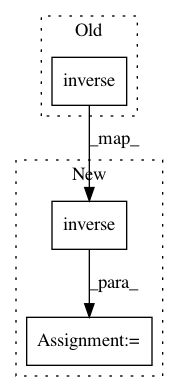

e4833d449452dc9b47a4e23c22c4b2b8abc7a682,geomstats/learning/exponential_barycenter.py,,_default_gradient_descent,#Any#Any#Any#Any#Any#Any#Any#,14
Before Change
while iteration < max_iter:
if not (grad_norm > epsilon or iteration == 0):
break
centered_points = group.compose(group.inverse(mean), points)
logs = group.log_from_identity(point=centered_points)
tangent_mean = step * gs.einsum(
"n, nk...->k...", weights / sum_weights, logs)
After Change
while iteration < max_iter:
if not (grad_norm > epsilon or iteration == 0):
break
inv_mean = group.inverse(mean)
print(inv_mean.shape)
print(points.shape)
centered_points = group.compose(inv_mean, points)
logs = group.log_from_identity(point=centered_points)
tangent_mean = step * gs.einsum(
"n, nk...->k...", weights / sum_weights, logs)
mean_next = group.compose(
In pattern: SUPERPATTERN
Frequency: 4
Non-data size: 3
Instances
Project Name: geomstats/geomstats
Commit Name: e4833d449452dc9b47a4e23c22c4b2b8abc7a682
Time: 2020-04-13
Author: ninamio78@gmail.com
File Name: geomstats/learning/exponential_barycenter.py
Class Name:
Method Name: _default_gradient_descent
Project Name: silvandeleemput/memcnn
Commit Name: d61e6f29cfa836e820b17d00663ce9d2ebfca5a7
Time: 2018-10-23
Author: silvandeleemput@gmail.com
File Name: memcnn/models/revop.py
Class Name: ReversibleBlock
Method Name: inverse
Project Name: cornellius-gp/gpytorch
Commit Name: a8375b2129a7b7d925f69355d926fa4a56a6c573
Time: 2019-09-24
Author: vishwaks@cs.cmu.edu
File Name: gpytorch/priors/wishart_prior.py
Class Name: WishartPrior
Method Name: __init__
Project Name: geomstats/geomstats
Commit Name: 1ffc5ad914da39a369337c1606a8ba788dbf9055
Time: 2020-08-25
Author: nicolas.guigui@inria.fr
File Name: geomstats/geometry/grassmannian.py
Class Name: Grassmannian
Method Name: random_uniform